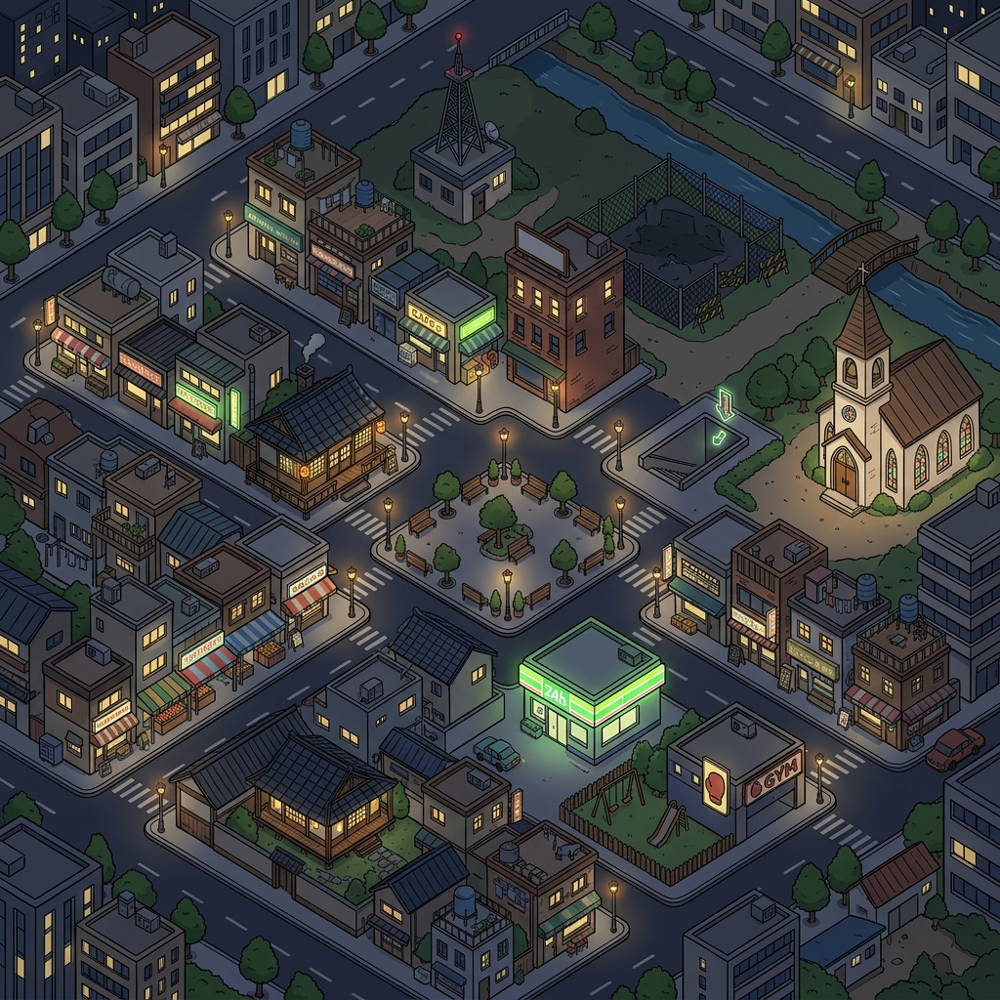

L1 = 원판 그대로(도로+바닥 — 분해 후엔 건물 없는 그림으로 재생성) · L2 = 스프라이트로 떠낼 조각들 · L3 = 핀·라벨(이미 별도 DOM) · L4 = 시계 등 UI(이미 별도).
워커(흰 원)를 움직여봐 — 워커 발끝 y가 건물 발끝 y보다 위(작음)면 그 건물 뒤로 들어가 가려진다. 지금 지도에선 불가능한 일이 레이어를 나누면 CSS 정렬 하나로 공짜.
발사 수 = 지면판(밤+낮 2회) + 선택 건물 × 2(밤/낮 크로마키). 성당은 이미 스프라이트 파이프(BLDGS)가 있어 0회로 계산. 상가 스트립·시장 천막은 묶음 1장씩으로 셈(개별 분리는 과발사).
도로 수정 → L1만 재생성(건물 무관·좌표 재실측도 L1 기준 마지막 1회)
건물 이동/교체 → 그 스프라이트 1장만 재굽기(다른 레이어 무접촉)
차·사람 가림 → 발끝 y 정렬로 자동(픽셀 마스크·가림체 폴리곤 유지보수 소멸)
장소 추가 → L3 데이터 한 줄(그림 무접촉)